Make Internal Loan Payments
Learn how to make payments to your CWCU loans and how to cancel scheduled internal payments.
1
Click "Move Money"

2
Click "Internal Transfers & Payments"
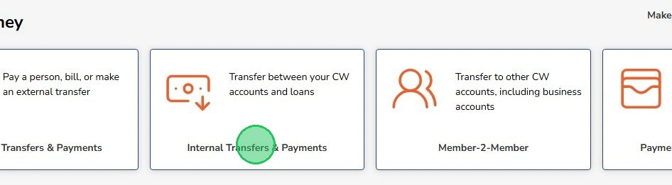
3
Click "Select source account" to select an account to transfer the payment out of
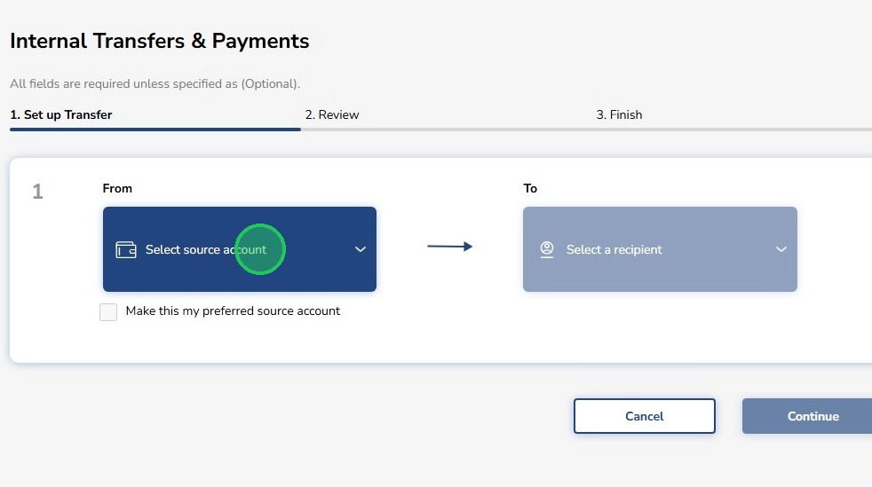
4
Select a source account
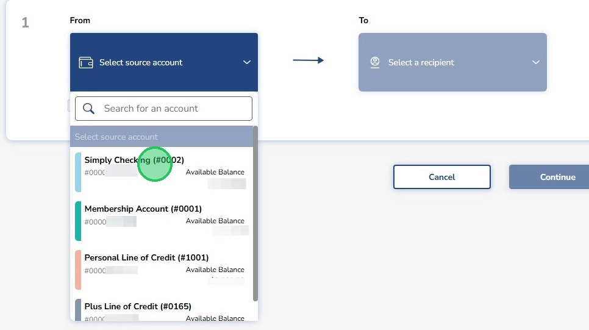
5
Click "Select a recipient" to pick the loan you want to pay
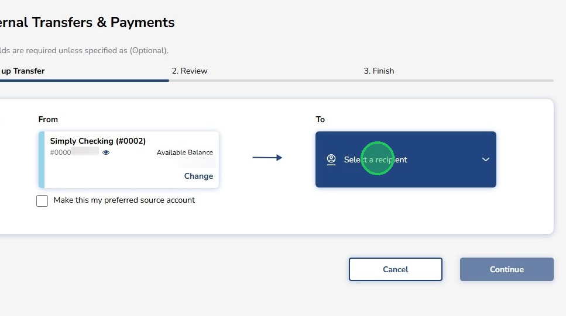
6
Select the loan
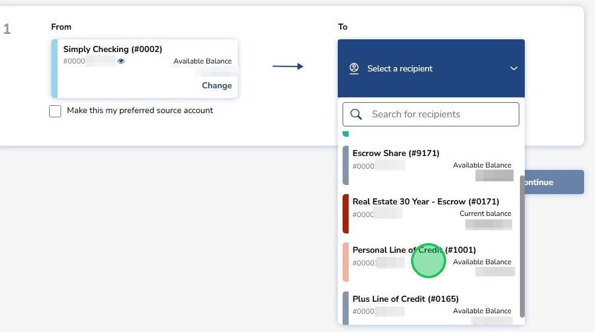
7
Select a payment option to either pay the minimum, full balance or an other payment amount
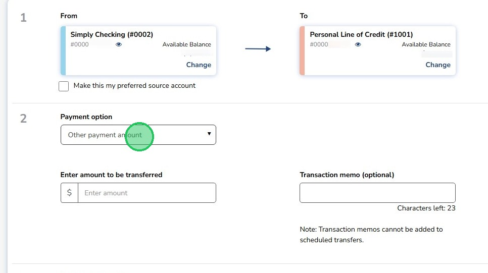
8
Enter the amount you want to pay if paying "Other payment amount", the amount will be pre-filled if paying the minimum or full statement balance.
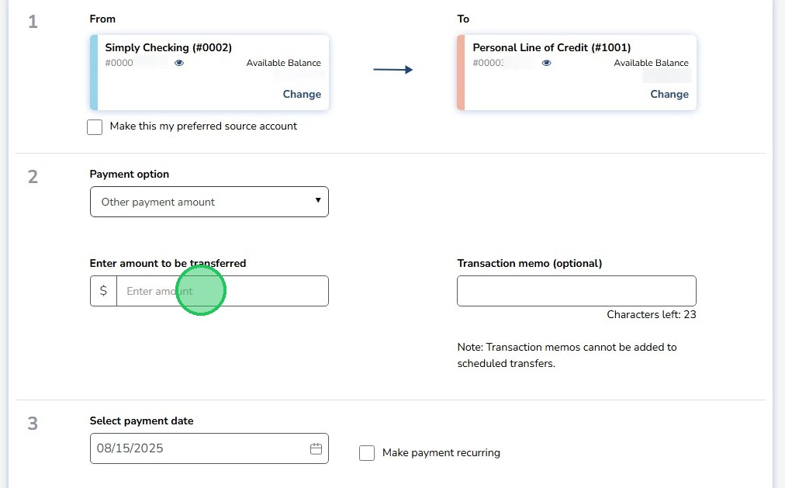
9
This field lets you put a note on the payment
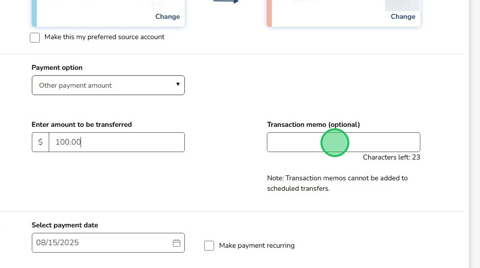
10
Select the date you want the payment to be made. Todays date will pre-fill in.
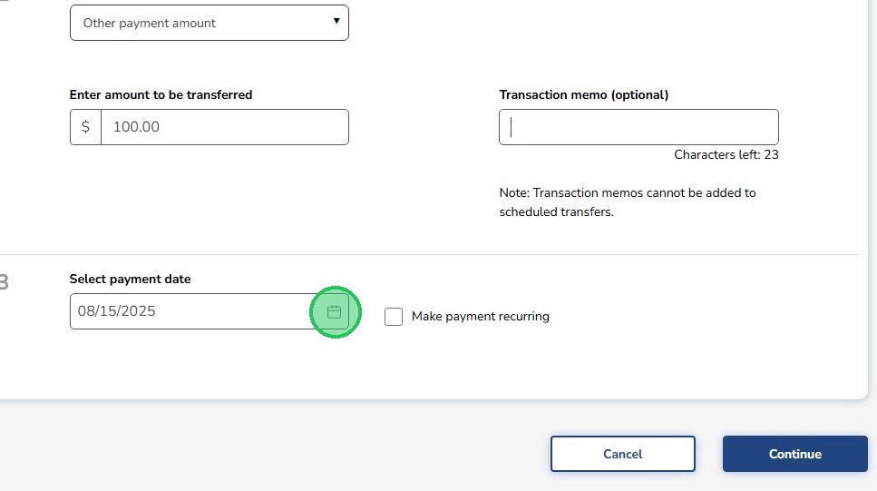
11
Check this box to make the payment recurring
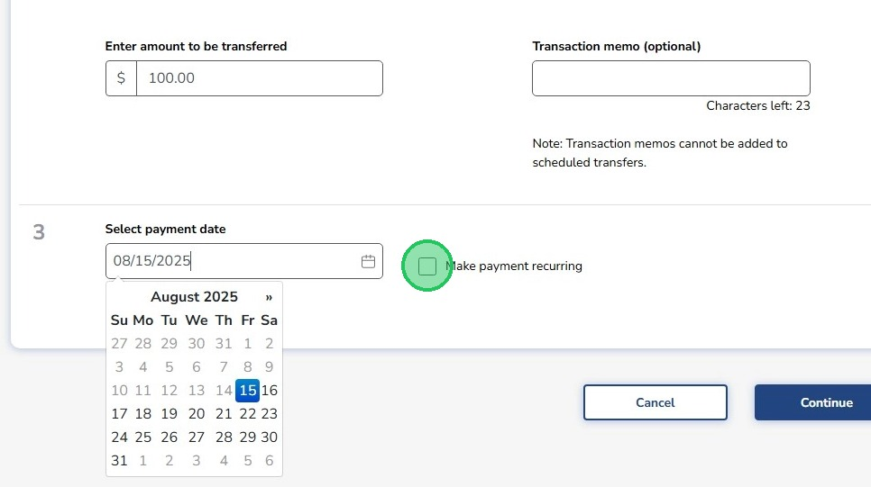
12
Select the frequency of the recurring payment
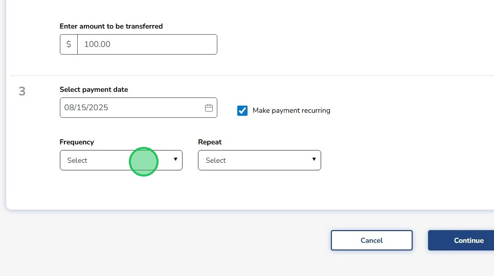
13
Frequency options are weekly, bi-weekly, semi-monthly or quarterly
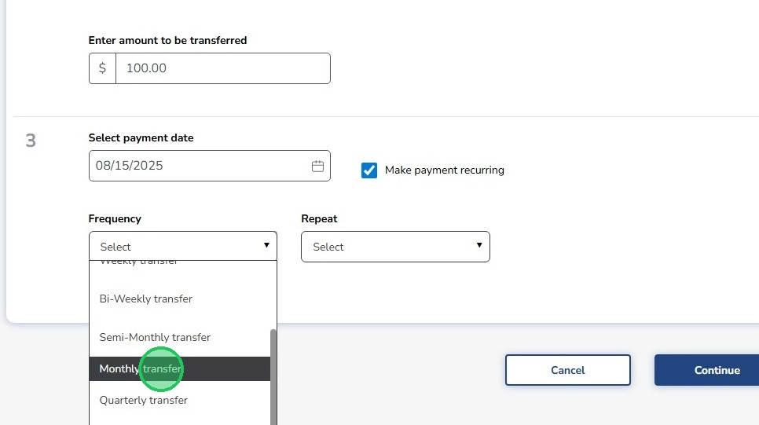
14
Select when the recurring payments should end by setting an end date or setting it to end when you cancel it.
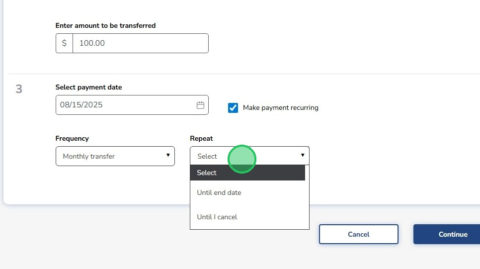
15
Click "Continue"
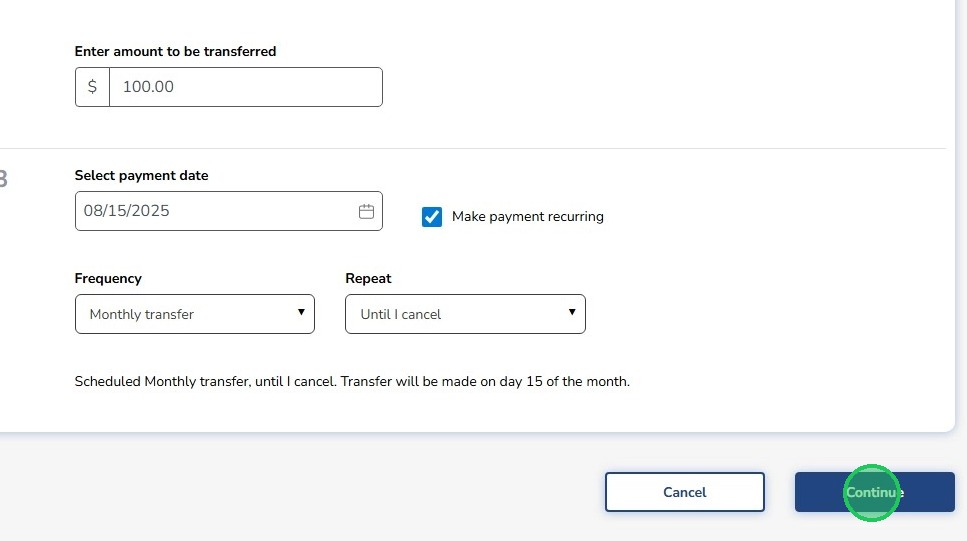
16
Review the payment information then hit "Confirm Transfer" if everything looks good. Select "Back" to return to the previous screen.
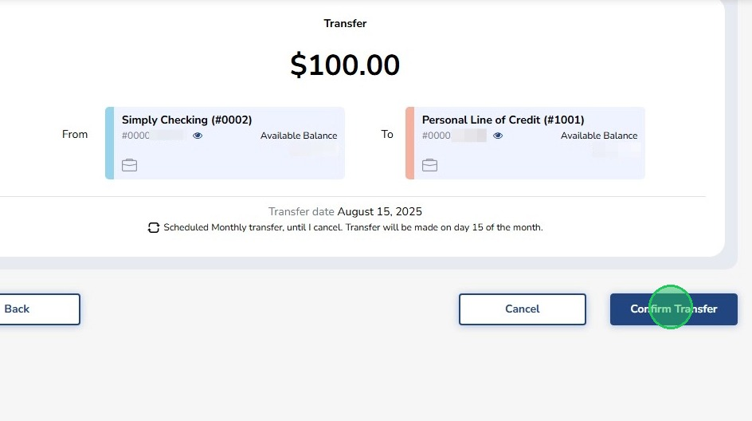
17
Click "Done"
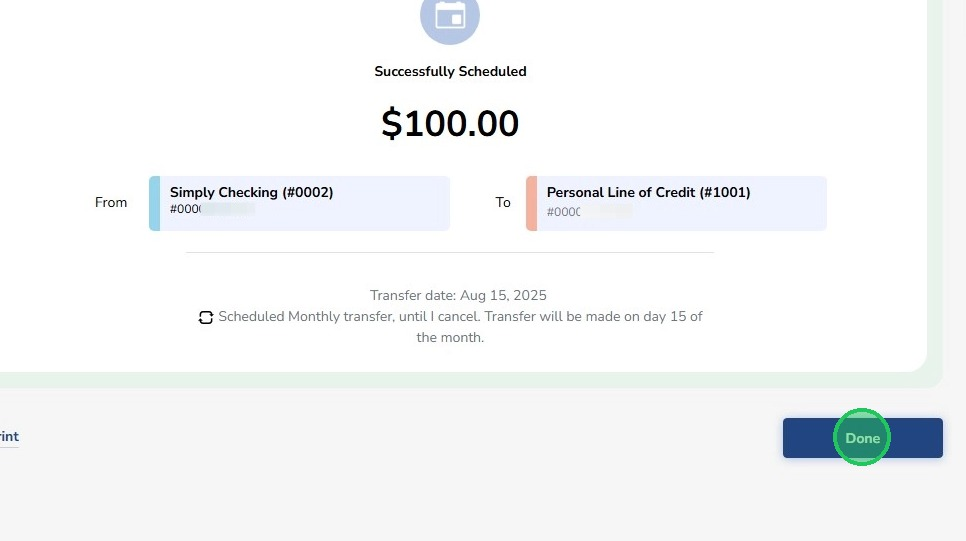